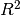
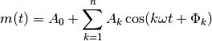
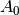
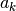
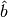
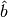
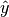
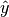

Note
This guide assumes you have already completed the Beginner’s Guide.
Now that you know how to fit and plot light curves, it is time you learn to set some of the fitting parameters. First, create an empty directory, named plotypus-intermediate-tutorial, and enter it:
>> mkdir plotypus-intermediate-tutorial
>> cd plotypus-intermediate-tutorial
To demonstrate the utility of different parameters, you will need a more diverse set of light curves. We have provided a sample of OGLE-III stars here [USSP]. Download and extract the files with:
>> curl -O https://astroswego.github.io/plotypus/_static/samples/ogle-sample1.tar.gz
>> tar -xvzf ogle-sample1.tar.gz
Now your directory should look like this:
plotypus-intermediate-tutorial/
├── ogle-sample1
│ ├── OGLE-BLG-RRLYR-02924.dat
│ ├── OGLE-LMC-CEP-0674.dat
│ └── OGLE-SMC-CEP-0668.dat
└── ogle-sample1.tar.gz
Let us begin by finding the period of each star, and saving it to a file. RR Lyrae have much shorter periods than Cepheids, so we are going to want to search over a different range for that one. First, we are going to process the two Cepheids:
>> ls -d -1 ogle-sample1/*CEP* | plotypus --min-period 4.0 --max-period 9.0 > output.dat
Now we are going to append the RR Lyrae data to that table:
>> plotypus -i ogle-sample1/OGLE-BLG-RRLYR-02924.dat --min-period 0.2 --max-period 1.0 | tail -n 1 >> output.dat
Take a look inside output.dat, it should be a table with 3 entries. We now want to extract the names and periods, so that we can supply them to plotypus on future runs. Run:
>> tail -n +2 output.dat | cut -f 1,2 --output-delimiter=" " > periods.dat
Everything we have done up to here has ran sequentially, processing the first star, then the second, then the third, etc. Wouldn’t it be great if you could make use of your multi-core processor (assuming you have one)? Well, you can. Just provide the --star-processes N option, where N is the number of processes you want to use. Try to keep N no larger than your computer’s total number of cores, because making N too large will just slow your machine down. Let’s try processing the 3 stars with 3 processes, using the periods we just obtained:
>> plotypus -i ogle-sample1/ -o plots/ --periods periods.dat --star-processes 3
Compare how long that took to using only one process as before:
>> plotypus -i ogle-sample1/ -o plots/ --periods periods.dat
Now imagine the difference that would make when processing thousands of stars, using a computer with many cores. We are going to stick with 3 for the rest of this tutorial, since there are only 3 stars.
Now we are going to introduce you to selectors and regressors. When fitting a
light curve, after the period is found, the observations are transformed from
temporal-space to phase-space. They are then transformed into Fourier-space,
which describes them as an  degree
Fourier series, by means of
regression analysis.
However, the choice of degree
degree
Fourier series, by means of
regression analysis.
However, the choice of degree  is non-trivial. A perfect fitting
function would have degree
is non-trivial. A perfect fitting
function would have degree  , but that is not possible for
real world data. We want to choose large enough to describe the data,
but keep it as small as possible. This is where selectors come in.
, but that is not possible for
real world data. We want to choose large enough to describe the data,
but keep it as small as possible. This is where selectors come in.
A selector used in astronomy for many years now is Baart’s criteria. See plotypus.preprocessing.Fourier.baart_criteria() for details. In order to tell plotypus to use this selector, include the --selector Baart option when calling it. We are also going to tell plotypus to restrict its search between degrees 2 and 20, which happens to be the default behaviour. Let’s try it for the 3 stars:
>> plotypus -i ogle-sample1/ -o baart-plots/ --periods periods.dat --star-processes 3 --fourier-degree 2 20 --selector Baart > baart-output.dat
You can take a look through the output table, and plots if you’d like.
A selector used often in fields outside astronomy is grid search, which does a much more exhaustive search of the parameters. In order to tell plotypus to use this instead of Baart, include the --selector GridSearch option when calling it, although it is the option used by default:
>> plotypus -i ogle-sample1/ -o gridsearch-plots/ --periods periods.dat --star-processes 3 --fourier-degree 2 20 --selector GridSearch > gridsearch-output.dat
The plots should look almost identical. Let’s take a look at the Fourier degrees they both selected, along with the  of the fits:
>> cut -f 1,7,9 baart-output.dat
>> cut -f 1,7,9 gridsearch-output.dat
You should notice a difference here for sure.
Now that you have tried different methods of selecting the fit degree, it is time to try different methods for creating the fit itself. A Fourier series takes the form

Regression seeks to solve for coefficients ,  , and
, and
 . Linear regression is the simplest form of regression, but since
this series is non-linear with respect to those coefficients, we use some
trigonometry to manipulate the series into the form
. Linear regression is the simplest form of regression, but since
this series is non-linear with respect to those coefficients, we use some
trigonometry to manipulate the series into the form
![m(t) = A_0 + \sum_{k=1}^n [ a_k \sin(k \omega t) + b_k \cos(k \omega t) ]](../_images/math/e642ef4d4b68ca8e79da96ac3ca86cfa5cd7d3b0.png)
Now we can use linear regression to solve for , , and
 . Linear regression, in general, seeks to find the vector
 which minimizes the error in the equation
. Linear regression, in general, seeks to find the vector
 which minimizes the error in the equation

So we must first formulate the Fourier series into the design matrix
 (see plotypus.preprocessing.Fourier.design_matrix())
and arrange the magnitudes into the vector . This is all done
internally in plotypus, so you don’t have to worry about it. What you do have
to think about, however, is how it solves for . There are many
methods for solving such an equation, and plotypus currently comes with two.
(see plotypus.preprocessing.Fourier.design_matrix())
and arrange the magnitudes into the vector . This is all done
internally in plotypus, so you don’t have to worry about it. What you do have
to think about, however, is how it solves for . There are many
methods for solving such an equation, and plotypus currently comes with two.
The simplest and most straight forward method is ordinary least squares, or OLS for short. This method finds the vector which minimizes

where  denotes the
denotes the  -norm. To tell plotypus to use
this method, simply provide the --regressor OLS option. We are going to
combine it with Baart’s criteria as the selector, as that is a combination
commonly used in astronomy:
-norm. To tell plotypus to use
this method, simply provide the --regressor OLS option. We are going to
combine it with Baart’s criteria as the selector, as that is a combination
commonly used in astronomy:
>> plotypus -i ogle-sample1/ -o baart-ols-plots/ --periods periods.dat --star-processes 3 --fourier-degree 2 20 --selector Baart --regressor OLS > baart-ols-output.dat
Another regression method, used commonly in machine learning and statistics, is the least absolute shrinkage and selection operator, or LASSO for short. In addition to seeking to minimize the error, LASSO seeks to minimize the sum of the components of , even driving some of them to zero. Since two values are being minimized, they must each be assigned a certain weight, and thus LASSO seeks to minimize

where  denotes the
denotes the  -norm.
-norm.  is yet
another value which must be chosen, and can be done so in many ways including
cross validation and
least-angle regression, the latter of which
is used in plotypus. To tell plotypus to use this method, provide the option
--regressor Lasso. We are going to combine this with grid search:
is yet
another value which must be chosen, and can be done so in many ways including
cross validation and
least-angle regression, the latter of which
is used in plotypus. To tell plotypus to use this method, provide the option
--regressor Lasso. We are going to combine this with grid search:
>> plotypus -i ogle-sample1/ -o gridsearch-lasso-plots/ --periods periods.dat --star-processes 3 --fourier-degree 2 20 --selector GridSearch --regressor Lasso > gridsearch-lasso-output.dat
The stars we have processed so far have all had very well behaved data, as far as variable stars go. Now consider a less well behaved star, with lots of outlier points. We don’t want those outliers harming our results. One star of particular interest from the OGLE-III catalog is OGLE-LMC-CEP-0227 [USSP], a Cepheid which is part of an eclipsing binary system. Download the photometry:
>> curl -O https://astroswego.github.io/plotypus/_static/samples/OGLE-LMC-CEP-0227.dat
Now try fitting it with both methods we’ve used, allowing them both to find the period (we’ll constrain it between 3 and 4 days to save time). For the sake of demonstration, we are going to add the parameter --sigma 9999, which will ensure that nothing is marked as an outlier:
>> plotypus -i OGLE-LMC-CEP-0227.dat -o baart-ols-plots/ --min-period 3.0 --max-period 4.0 --selector Baart --regressor OLS --sigma 9999 > 0227-baart-ols.dat
>> plotypus -i OGLE-LMC-CEP-0227.dat -o gridsearch-lasso-plots/ --min-period 3.0 --max-period 4.0 --selector GridSearch --regressor Lasso --sigma 9999 > 0227-gridsearch-lasso.dat
Now take a look at the plots generated in the baart-ols-plots and gridsearch-lasso-plots directories, both named OGLE-LMC-CEP-0227.png. They should look something like this:

Those outliers caused by its companion star are really problematic. Let’s try that again, but this time with a lower sigma. The default is 20, so we’ll go with that:
>> plotypus -i OGLE-LMC-CEP-0227.dat -o baart-ols-plots/ --min-period 3.0 --max-period 4.0 --selector Baart --regressor OLS --sigma 20 > 0227-baart-ols.dat
>> plotypus -i OGLE-LMC-CEP-0227.dat -o gridsearch-lasso-plots/ --min-period 3.0 --max-period 4.0 --selector GridSearch --regressor Lasso --sigma 20 > 0227-gridsearch-lasso.dat
This time it should come out much better. Notice the outliers have been colored green instead of blue:

In addition to providing a cutoff sigma, you can also provide the method by which sigma-clipping is performed. The default method is median absolute deviation, which can be given explicitly with the --sigma-clipping mad option. The alternative is to use standard deviation with the --sigma-clipping std option. You will want to use a much smaller sigma value for this, compared to before. Let’s give it a try:
>> plotypus -i OGLE-LMC-CEP-0227.dat -o gridsearch-lasso-plots/ --min-period 3.0 --max-period 4.0 --selector GridSearch --regressor Lasso --sigma 2 --sigma-clipping std > 0227-gridsearch-lasso.dat
It’s not terrible, but notice there are many outliers which have not been marked as such:

That concludes this guide. We recommend you download the OGLE-III catalog yourself and try running plotypus on more of the data there.
Citations
| [USSP] | (1, 2) Udalski, A. ; Szymanski, M. K. ; Soszynski, I. ; Poleski, R., 2008, “The Optical Gravitational Lensing Experiment. Final Reductions of the OGLE-III Data”, Acta Astronomica, vol. 58, pp. 69-87 |